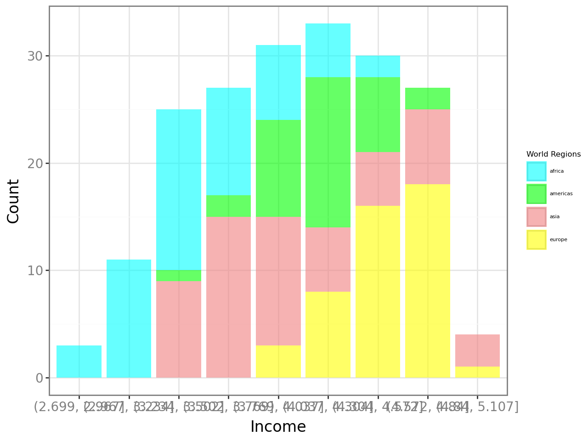
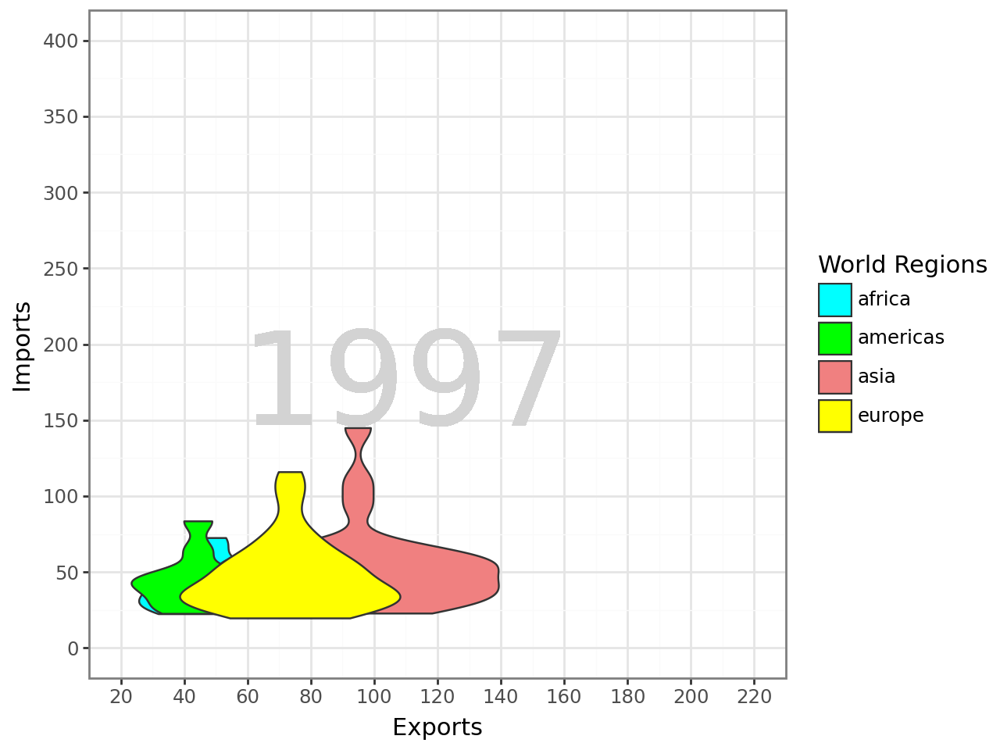
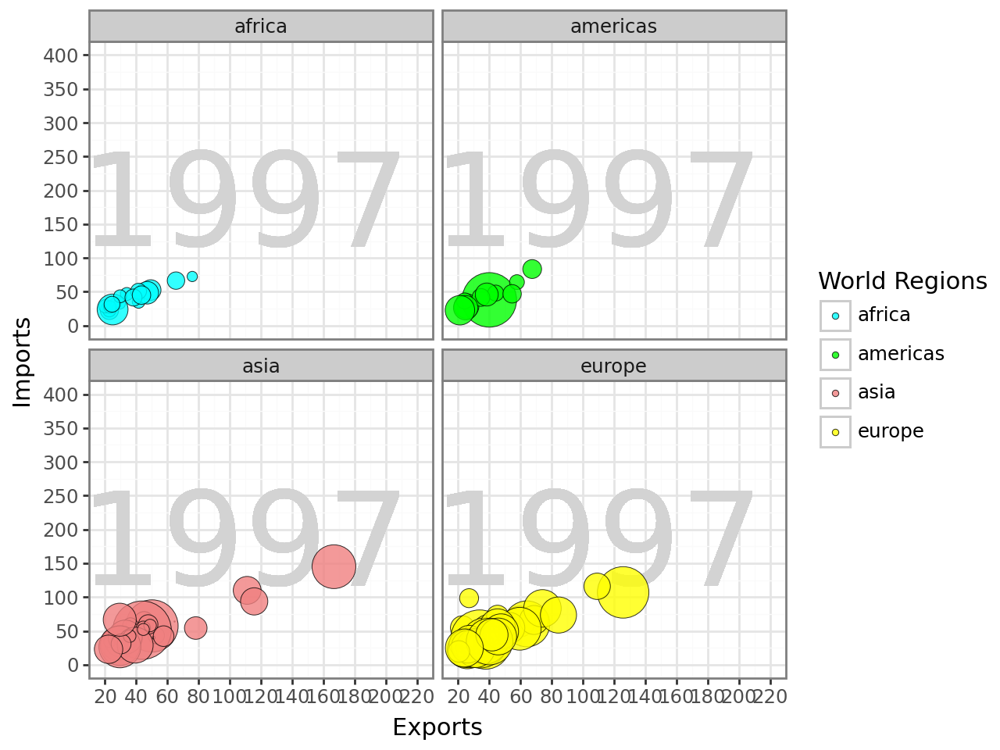
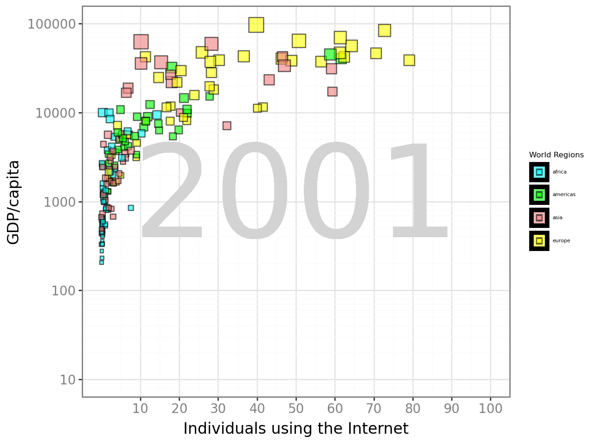

---
title: Lab 1
author: Summer Churby
format:
html:
toc: true
code-fold: true
---Cell In[151], line 1 --- ^ SyntaxError: invalid syntax
---
title: Lab 1
author: Summer Churby
format:
html:
toc: true
code-fold: true
---Cell In[151], line 1 --- ^ SyntaxError: invalid syntax
Task 1 Below is a plot of a visualization in Gapminder (the default/starting one actually). Look it over and take note of the variables being visualized.
Import the q1data.csv dataset.
Recreate the plot as best you can using plotnine.
import pandas as pd
# import data set
q1data = pd.read_csv("/Users/achur/OneDrive/Desktop/School/CP Fall 2024/544/q1data.csv")
# remove any missing values
q1data = q1data.dropna()
from plotnine import ggplot, geom_point, aes, labs, scale_size, scale_y_continuous, geom_text, facet_wrap, geom_jitter, scale_x_continuous, geom_tile
from plotnine import theme, theme_bw, scale_x_log10, scale_fill_manual, element_text, geom_histogram, guides, guide_legend, geom_bar, scale_y_log10# create plot
(ggplot(q1data,
aes( x = "income", y = "life_exp", size = "population", fill = "four_regions"))
+ geom_text(aes(x = 7000, y = 60, label = "2010"), size = 120, color = "lightgrey")
+ geom_point(alpha = 0.6, color = "black", stroke = 0.5)
+ labs(x = "Income", y = "Life Expectancy", fill = "World Regions")
+ scale_size(range = [.1, 24])
+ scale_x_log10(limits = [0, 128000],
breaks = [500, 1000, 2000, 4000, 8000, 16000, 32000, 64000],
labels = ["500", "1000", "2000", "4000", "8000", "16000", "32000", "64000"])
+ scale_y_continuous(limits = (10, 90), breaks = range(10, 91, 10))
+ scale_fill_manual(values = {"africa": "aqua", "americas": "lime", "europe": "yellow", "asia": "lightcoral"})
+ theme_bw()
+ guides(size = False, fill = guide_legend(override_aes = {"size": 2}))
+ theme(text = element_text(family = "Keyboard", size = 14),
axis_title = element_text(family = "Keyboard", size = 12, color = "black"),
axis_text = element_text(family = "Keyboard", size = 10, color = "gray"),
legend_title = element_text(size = 6),
legend_text = element_text(size = 4))
)C:\Users\achur\Downloads\python\Lib\site-packages\plotnine\scales\scale_continuous.py:221: RuntimeWarning: divide by zero encountered in log10
# Create plot using different geometry
import numpy as np
d1data = q1data[q1data["income"] > 0]
q1data['log_income'] = np.log10(q1data['income'])
q1data['log_income_bin'] = pd.cut(q1data['log_income'], bins=np.linspace(np.log10(500), np.log10(128000), 10))
bin_counts = q1data.groupby(['log_income_bin', 'four_regions']).size().reset_index(name='count')
(ggplot(bin_counts, aes(x='log_income_bin', y='count', fill='four_regions'))
+ geom_bar(stat='identity', position='stack', alpha=0.6)
+ labs(x="Income", y="Count", fill="World Regions")
+ scale_fill_manual(values={"africa": "aqua", "americas": "lime", "europe": "yellow", "asia": "lightcoral"})
+ theme_bw()
+ theme(text=element_text(family="monospace", size=14),
axis_title=element_text(family="monospace", size=12, color="black"),
axis_text=element_text(family="monospace", size=10, color="gray"),
legend_title=element_text(size=6),
legend_text=element_text(size=4))
)<positron-console-cell-134>:6: FutureWarning: The default of observed=False is deprecated and will be changed to True in a future version of pandas. Pass observed=False to retain current behavior or observed=True to adopt the future default and silence this warning.Task 2 Below is another plot of a visualization in Gapminder. Look it over and take note of the variables being visualized.
Import the q2data.csv dataset.
Recreate the plot as best you can using plotnine.
# import data set
q2data = pd.read_csv("/Users/achur/OneDrive/Desktop/School/CP Fall 2024/544/q2data.csv")
# remove any missing values
q2data = q2data.dropna()# Create plot
q2data['energy'] = q2data['energy'].str.replace('k', '').astype(float) * 1000
(ggplot(q2data,
aes(x = "exports", y = "imports", size = "energy", fill = "four_regions"))
+ geom_text(aes(x = 40, y = 250, label = "1997"), size = 100, color = "lightgrey")
+ geom_point(alpha = 0.6, color = "black", stroke = 0.5)
+ labs(x = "Exports", y = "Imports", fill = "World Regions")
+ scale_size(range = (.1, 24))
+ scale_x_log10(limits = (0, 200),
breaks = [20, 40, 60, 80, 100, 120, 140, 160, 180],
labels = ["20", "40", "60", "80", "100", "120", "140", "160", "180"])
+ scale_y_continuous(limits = (0, 400), breaks = range(0, 401, 50))
+ scale_fill_manual(values = {"africa": "aqua", "americas": "lime", "europe": "yellow", "asia": "lightcoral"})
+ theme_bw()
+ guides(size = False, fill = guide_legend(override_aes = {"size": 2}))
+ theme(text = element_text(family = "Keyboard", size = 14),
axis_title = element_text(family = "Keyboard", size = 12, color = "black"),
axis_text = element_text(family = "Keyboard", size = 10, color = "gray"),
legend_title = element_text(size = 6),
legend_text = element_text(size = 4))
)C:\Users\achur\Downloads\python\Lib\site-packages\plotnine\scales\scale_continuous.py:221: RuntimeWarning: divide by zero encountered in log10
# Create plot with other geometry
(ggplot(q2data, aes(x = "exports", y = "imports", size = "energy", fill = "four_regions"))
+ geom_text(aes(label = "1997"), x = 110, y = 170, color = "lightgrey", size = 60, alpha = 0.5)
+ geom_jitter(alpha = 0.8, color = "black", stroke = 0.2)
+ labs(x = "Exports", y = "Imports", fill = "World Regions")
+ scale_size(range = [.1, 15])
+ scale_x_continuous(limits = (20, 220), breaks = list(range(20, 221, 20))
)
+ scale_y_continuous(limits = (0, 400), breaks = list(range(0, 401, 50))
)
+ scale_fill_manual(values = {"africa": "aqua", "americas": "lime", "europe": "yellow", "asia": "lightcoral"})
+ guides(size = False)
+ facet_wrap("~four_regions")
+ theme_bw()
)C:\Users\achur\Downloads\python\Lib\site-packages\plotnine\layer.py:364: PlotnineWarning: geom_jitter : Removed 33 rows containing missing values.
Task 3 Below is a final plot of a visualization in Gapminder. Look it over and take note of the variables being visualized.
Import the q3data.csv dataset.
Recreate the plot as best you can using plotnine.
# import data set
q3data = pd.read_csv("/Users/achur/OneDrive/Desktop/School/CP Fall 2024/544/q3data.csv")
# remove any missing values
q3data = q3data.dropna()#create plot
(ggplot(q3data,
aes(x = "internet_users", y = "gdp", size = "income", fill = "four_regions"))
+ geom_text(aes(x = 50, y = 1000, label = "2001"), size = 100, color = "lightgrey")
+ geom_point(alpha = 0.6, color = "black", stroke = 0.5)
+ labs(x = "Individuals using the Internet", y = "GDP/capita", fill = "World Regions")
+ scale_size(range = (.1, 14))
+ scale_x_continuous(limits=(0, 100), breaks=range(10, 101, 10))
+ scale_y_log10(limits=(10, 100000), breaks=[10, 100, 1000, 10000, 100000], labels=["10", "100", "1000", "10000", "100000"])
+ scale_fill_manual(values = {"africa": "aqua", "americas": "lime", "europe": "yellow", "asia": "lightcoral"})
+ theme_bw()
+ guides(size = False, fill = guide_legend(override_aes = {"size": 2}))
+ theme(text = element_text(family = "Keyboard", size = 14),
axis_title = element_text(family = "Keyboard", size = 12, color = "black"),
axis_text = element_text(family = "Keyboard", size = 10, color = "gray"),
legend_title = element_text(size = 6),
legend_text = element_text(size = 4))
)C:\Users\achur\Downloads\python\Lib\site-packages\plotnine\layer.py:364: PlotnineWarning: geom_point : Removed 1 rows containing missing values.
# Create plot for other geometry
(ggplot(q3data,
aes(x = "internet_users", y = "gdp", size = "income", fill = "four_regions"))
+ geom_text(aes(x = 50, y = 1000, label = "2001"), size = 100, color = "lightgrey")
+ geom_tile(aes(width = 1, height = 2000), alpha = 0.6, color = "black")
+ geom_point(aes(size='income'), shape = "s", alpha=0.6, color='black', stroke=0.5)
+ labs(x = "Individuals using the Internet", y = "GDP/capita", fill = "World Regions")
+ scale_x_continuous(limits=(0, 100), breaks=range(10, 101, 10))
+ scale_y_log10(limits=(10, 100000), breaks=[10, 100, 1000, 10000, 100000], labels=["10", "100", "1000", "10000", "100000"])
+ scale_fill_manual(values = {"africa": "aqua", "americas": "lime", "europe": "yellow", "asia": "lightcoral"})
+ theme_bw()
+ guides(size = False, fill = guide_legend(override_aes = {"size": 2}))
+ theme(text = element_text(family = "Keyboard", size = 14),
axis_title = element_text(family = "Keyboard", size = 12, color = "black"),
axis_text = element_text(family = "Keyboard", size = 10, color = "gray"),
legend_title = element_text(size = 6),
legend_text = element_text(size = 4))
)C:\Users\achur\Downloads\python\Lib\site-packages\plotnine\layer.py:364: PlotnineWarning: geom_tile : Removed 1 rows containing missing values.
C:\Users\achur\Downloads\python\Lib\site-packages\plotnine\layer.py:364: PlotnineWarning: geom_point : Removed 1 rows containing missing values.